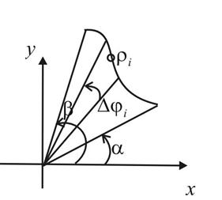
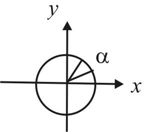
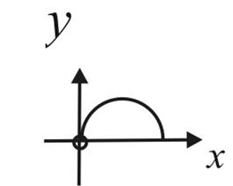
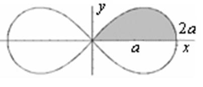

24.1.7. Площадь криволинейного сектора в полярной системе координат
Пусть  – непрерывная
функция. Определим площадь криволинейного сектора, ограниченного кривой и лучами
– непрерывная
функция. Определим площадь криволинейного сектора, ограниченного кривой и лучами  ,
,  .
.
– непрерывная
функция. Определим площадь криволинейного сектора, ограниченного кривой и лучами , .Разобьем указанный сектор лучами на сектора величины . Пусть –
величина радиус-вектора для произвольного .

Лемма: Площадь кругового сектора равна
Площадь кругового
сектора
.
Доказательство следует из пропорции:
.
Тогда площадь кругового сектора равна
; сумма –
площадь ступенчатого сектора, спрямляющего криволинейный сектор.
При  ,
,
 Площадь
криволинейного сектора в полярной системе координат
–интегральная сумма, тогда –площадь
криволинейного сектора.
Площадь
криволинейного сектора в полярной системе координат
–интегральная сумма, тогда –площадь
криволинейного сектора.
,
Площадь
криволинейного сектора в полярной системе координат
–интегральная сумма, тогда –площадь
криволинейного сектора.
Вычислить площадь круга .
В силу симметрии достаточно вычислить 1/2 искомой площади.

Найти площадь, заключённую внутри лемнискаты Бернулли  .
.
.Решение:
В силу симметрии достаточно вычислить одну четверть искомой площади:
, .
